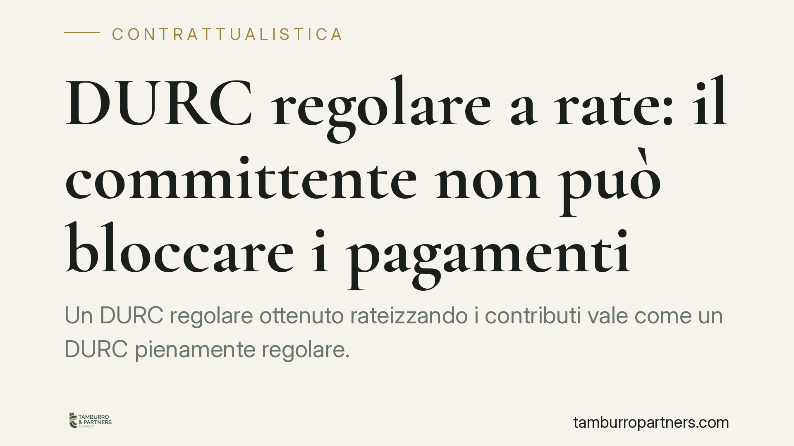

DURC regolare a rate: il committente non può bloccare i pagamenti
Un DURC regolare ottenuto rateizzando i contributi vale come un DURC pienamente regolare. Il committente che sospende il pagamento delle fatture solo perché l'appaltatore paga a rate agisce fuori dai casi consentiti. Il blocco resta legittimo solo di fronte a vere anomalie documentali. Vediamo quando la sospensione è lecita e quando, invece, espone il committente a responsabilità.

Il fatto
Nella prassi degli appalti capita spesso che il committente, ricevuto il DURC dell'impresa appaltatrice, scopra che la regolarità contributiva deriva da una rateizzazione concordata con INPS o INAIL. La tentazione è quella di sospendere il pagamento delle fatture, trattando la dilazione come un segnale di difficoltà. È una lettura errata: la rateizzazione produce un DURC regolare a tutti gli effetti.
La distinzione che conta
Occorre separare due situazioni che la prassi tende a confondere.
Dilazione del debito contributivo. L'impresa ha un debito, ma ha ottenuto un piano di rateizzazione e lo sta rispettando. In questo caso il DURC viene rilasciato come regolare. Non c'è irregolarità da far valere.
Irregolarità vera e propria. L'impresa ha un DURC negativo, oppure il documento presenta anomalie (dati non corrispondenti, DURC scaduto, esito di non regolarità). Qui la posizione del committente è diversa e la sospensione può trovare giustificazione.
Il punto è che la rateizzazione appartiene alla prima categoria, non alla seconda. Finché il piano è rispettato, il committente non ha un titolo per bloccare i pagamenti.
Inquadramento normativo
La disciplina del DURC è contenuta nel D.M. 30 gennaio 2015. L'art. 3 individua le condizioni di regolarità contributiva; l'art. 4 disciplina espressamente la rateizzazione, prevedendo che l'ammissione a un piano di dilazione consente il rilascio del DURC con esito di regolarità. La ratio è chiara: lo Stato ha già definito con l'impresa le modalità di recupero del credito contributivo e non vi è ragione per penalizzarla ulteriormente nei rapporti commerciali.
Sul versante del contratto rileva l'art. 29 del D.Lgs. 276/2003, che fonda la responsabilità solidale del committente per i trattamenti retributivi e contributivi dei lavoratori dell'appaltatore. È questo il meccanismo che spinge il committente alla prudenza. Ma la prudenza non può trasformarsi in sospensione automatica: l'eccezione di inadempimento ex art. 1460 c.c. presuppone un inadempimento reale e proporzionato, non la semplice circostanza che il debito contributivo venga saldato a rate.
> Da verificare in revisione. La sintesi della fonte richiama un'ordinanza della Corte di Cassazione (indicata come n. 4079/2022) nel senso del divieto di blocco dei pagamenti a fronte di DURC regolare da rateizzazione. Il riferimento non è confermabile in questa sede e va verificato nel numero, nell'anno e nella massima prima della pubblicazione. In attesa di riscontro, il principio è qui esposto come orientamento della giurisprudenza di legittimità, senza costruirvi sopra l'intero ragionamento.
Implicazioni pratiche
Per il committente significa che la sospensione dei pagamenti in presenza di un DURC regolare, pur se derivante da rateizzazione, è una scelta a rischio. Trattenere le fatture senza un titolo legittimo configura un ritardo nell'adempimento della propria obbligazione di pagamento.
Nei rapporti tra imprese (B2B), il ritardo nel pagamento del corrispettivo può far scattare gli interessi moratori previsti dal D.Lgs. 231/2002 sulle transazioni commerciali, oltre al risarcimento del maggior danno secondo le regole ordinarie (artt. 1218 e 1224 c.c.). Il committente che blocca a torto non evita un rischio: ne crea uno proprio.
Per l'impresa appaltatrice la tutela è concreta, ma condizionata. La regolarità del DURC rateizzato presuppone il rispetto puntuale delle scadenze del piano: la decadenza dalla rateizzazione — per mancato pagamento anche di una sola rata — fa venir meno la regolarità e riporta la posizione nell'area dell'irregolarità vera e propria. Da quel momento il quadro cambia anche per il committente.
Cosa fare in concreto
- Verificate l'esito del DURC, non la sua origine. Se il documento è regolare, la rateizzazione sottostante non legittima da sola la sospensione dei pagamenti.
- Non applicate blocchi automatici. Prima di sospendere, accertate che vi sia una reale anomalia documentale o un DURC negativo, e documentatela.
- Monitorate la tenuta del piano. Per il committente, è utile chiedere conferma periodica della regolarità; la decadenza dalla rateizzazione muta la situazione giuridica.
- Rispettate i termini di pagamento B2B. Un ritardo ingiustificato espone agli interessi moratori ex D.Lgs. 231/2002 e al risarcimento del danno.
- Formalizzate le contestazioni. Qualunque sospensione va comunicata per iscritto, con indicazione della causa specifica, per non trasformare una legittima eccezione in un inadempimento proprio.
---
Contributo informativo a cura di Tamburro & Partners Avvocati - Avv. Giuseppe Tamburro. Non costituisce parere legale.
Ogni contratto ha il suo equilibrio.
Se vuoi una revisione delle clausole o una redazione su misura, scrivi allo studio. Ti rispondiamo entro un giorno lavorativo.